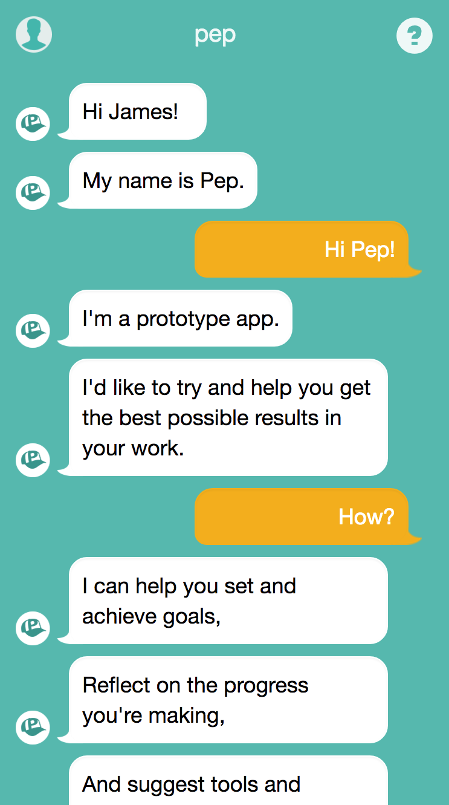
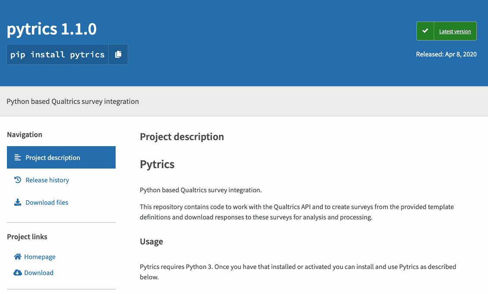
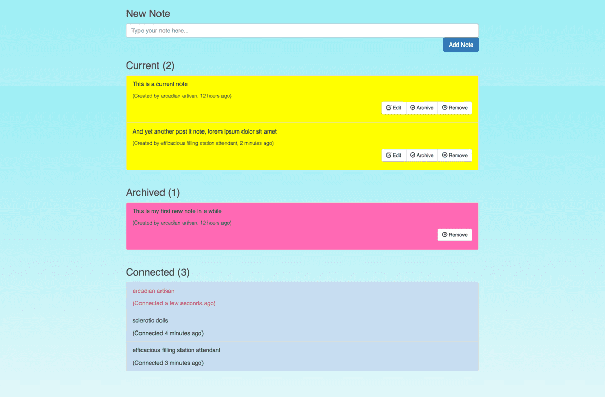

Work
Below are a few brief examples of some of the many projects I have worked on.
As you can imagine over the course of my career I have worked on a huge number of projects and gained experience with a wide variety of tech stacks, many of these projects remain the property of my former employers so I have chosen a few personal and open source projects to showcase here.
I'd be happy to discuss my experience should you wish to know more, equally feel free to checkout my GitHub profile for further examples of my work and actual code.
Pep Coaching Bot

A goal setting and getting, coaching assistant, called Pep!.
Built using Node, Jade, Passport, Backbone & MongoDb. Including Slack notifications, SendGrid emails and hosted on Heroku.
I undertook this project in 2016 after receiving the brief and initial design files from a contact. I successfully built, launched, user tested and iterated the proof of concept.
My client was responsible for the initial idea and sourcing of content, whilst I busied myself with the build and implementation. This included complex branching logic to deliver several different types of content on a conversational style, with the goal of helping the users to improve themselves and their skills.
Content included, greetings, sign-offs, onboarding, goals (both setting and reviewing), challenges, check-ins, positive and negative responses to user input, insights of various types and jokes and book recommendations.
The client and I collaborated to design and then deliver a complex set of rules and logic to present this content in a weekly, check-in based format, unique to each user based on their input and needs.
Open Source Project on PyPi

An open source software library I produced whilst employed at 60 Decibels for projects funded by the Bill and Melinda Gates Foundation. Due to the funding method this tool had to be made available for free usage by the public.
The package is up on PyPi here and it allows the creation of Qualtrics surveys from pre-defined templates, and the collection and processing of responses to these surveys.
For further information on this code please refer to PyPi and the GitHub repository for the package.
Post Its - Collaborative Note Taking

I set myself a little challenge to get a basic Vue.js app working, with persistence to MongoDb and real-time comms via Web Sockets, the application is a basic note taking app where users can see who else is online, the notes they’ve made, and even collaborate on the same notes.
I hosted the prototype application(s) in Heroku, at the time my platform of choice for personal projects due to its free tier, ease of use, great add ons and dev pipelines, sadly the free tier has been deprecated now.
The code consisted of two applications, a client SPA and a web-socket server. Both are public projects in my GitHub profile, follow the links to view the code